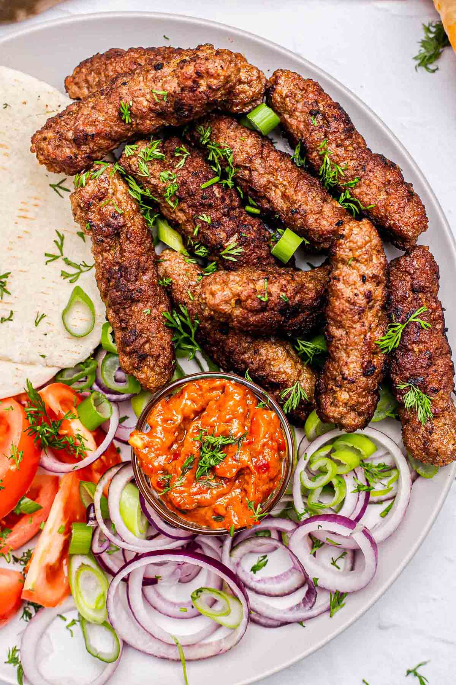

Bosnian Cevapi

Cevapi is a traditional Bosnian dish that consists of grilled minced meat, typically served with flatbread and condiments.
Experience the rich flavors of Bosnia with our authentic Cevapi recipe. Follow the steps below to create these delicious grilled meat rolls.
Ingredients
- 1 pound ground beef
- 1/2 pound ground lamb
- 1 onion, finely chopped
- 2 cloves garlic, minced
- 1 teaspoon salt
- 1 teaspoon black pepper
- 1 teaspoon sweet paprika
- 1/2 teaspoon baking soda
- 1/4 cup sparkling water
- Chopped fresh parsley for garnish
Steps to make delicious Cevapi
- In a large bowl, combine ground beef, ground lamb, chopped onion, minced garlic, salt, black pepper, sweet paprika, baking soda, and sparkling water. Mix well until all ingredients are evenly incorporated.
- Cover the bowl with plastic wrap and refrigerate for at least 1 hour to let the flavors meld.
- Preheat a grill or grill pan over medium-high heat.
- Shape the meat mixture into small sausage-like rolls, about 3 inches long.
- Grill the cevapi for 8-10 minutes, turning occasionally, until they are cooked through and have a nice char on the outside.
- Serve the cevapi hot with flatbread and garnish with chopped fresh parsley.